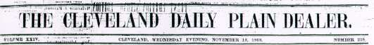
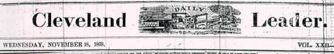

The Cleveland Herald
18 November 1868
[The first of the three Cleveland reviews was written by
Mrs. Mary Fairbanks, the wife of the publisher of the
Herald, and the woman MT addressed as "Mother." He met her on
the Quaker City trip, and almost immediately put himself
up for adoption as her "Prodigal Son." He premiered the "American
Vandal" lecture in Cleveland so that his lecture tour could begin
under her auspices. The review she wrote was apparently very
influential in convincing other midwestern towns to engage MT as
a lecturer.]
The course of lectures before the Library Association was
inaugurated last evening by the brilliant entertainment of the
humorist "Mark Twain." Notwithstanding the unpropitious weather,
and strong competition of counter attractions in the way of
amusements, Case Hall was early filled with an assembly who were
prepared to criticize closely this new candidate for their favor.
A few moments sufficed to put him and his audience on the best of
terms, and to warm him up with the pleasant consciousness of
their approval. For nearly two hours he held them by the
magnetism of his varied talent.
We shall attempt no transcript of his lecture, lest with
unskillful hands we mar its beauty, for beauty and poetry it
certainly possessed, though the production of a profound
humorist.
We know not which to commend, the quaint utterances, the funny
incidents, the good-natured recital of the characteristics of the
harmless "Vandal," or the gems of beautiful descriptions which
sparkled all through his lecture. We expected to be amused, but
we were taken by surprise when he carried us on the wings of his
redundant fancy, away to the ruins, the cathedrals, and the
monuments of the Old World. There are some passages of gorgeous
word painting which haunt us like a remembered picture.
We congratulate Mr. Twain upon having taken the tide of public
favor "at the flood" in the lecture field, and having
conclusively proved that a man may be a humorist without being a
clown. He has elevated his profession by his graceful delivery
and by recognizing in his audience something higher than merely a
desire to laugh. We can assure the cities who await his coming
that a rich feast is in store for them and Cleveland is proud to
offer him the first laurel leaf, in his role as lecturer this
side of the "Rocky-slope."

The most popular American humorist since the demise of poor
Artemus, made his first bow to a Cleveland public, as a lecturer,
last evening, at Case Hall. Mark Twain has reason to feel a
gratified pride at the pleasant and satisfactory impression he
made upon his immense audience. The "American Vandal Abroad" was
the title of a slightly incoherent address of between one and two
hour's duration -- mingling the most irresistible humor with
little flights of eloquence, and making up an entertainment of
which it were impossible to tire. The "Vandal" was the type of
careless, dry, Yankee tourist, who never lost his equanimity, or
coolness, no matter what his situation might be. He looked at a
manuscript of Christopher Columbus, with the most infernal sang
froid -- remarking that it didn't amount to much as a specimen of
penmanship; there were school boys in his country, who could beat
it. The vandal, in order that he may the better appreciate
Columbus, is told by the guide that he discovered America. "Guess
not," says he, "I have just come from America, and I heard
nothing about it!" He examines a mummy. To the guide -- "What did
I understand you to say was the name of the gentleman?" The guide
perspires, and explains that the diseased died some 3,000 years
ago. "Ah," sighs the vandal, "are his parents living?" The Vandal
is an untiring relic hunter. He got along very well till he
arrive in the Crimea; there relics were scarce. He finally found
the hip bone of a horse, on the field of the Alma, however, which
was gobbled up and labeled -- "Jawbone of a Russian general." The
apostrophe to the Sphinx was really beautiful; and when the
speaker would up with a sketch of the imperturbable Vandal who so
coolly whistled in its shade, the house "came down["]. We have
given two or three "specimen bricks." Mr. Clemmen's manner very
much enhanced the effect of his remarks -- there is a dry,
comical drawl in his voice, that is irresistible in a funny
story. He should speak louder, however; those in the rear of the
hall lost many of his good things.

MARK TWAIN. -- A
very large audience assembled in Case Hall last evening to hear
Mark Twain lecture. It is a dangerous thing for a man who has
made a reputation as a writer to enter the field of lecturing,
but as Mr. Clemens' manner corresponds completely with his dry,
off-hand style of wit he has perhaps suffered nothing in
reputation by appearing before the lecture-going poet [sic] as a
candidate for its plaudits. His subject was the "American Vandal
Abroad," and he portrayed the nonchalance, dignity and
independence of that large class of Americans traveling in
Europe, and known at home as "shoddy," with truth and in a
humorous way. The discourse, however, was not altogether
facetious. At times there were passages which were grand indeed
and in the delivery of which the lecturer became eloquent. The
lecture course of the literary association has thus had a most
auspicious beginning and we hope to see every entertainment as
liberally patronized. Next week Mr. J. E. Murdoch, the celebrated
elocutionist, will give some miscellaneous readings.
|